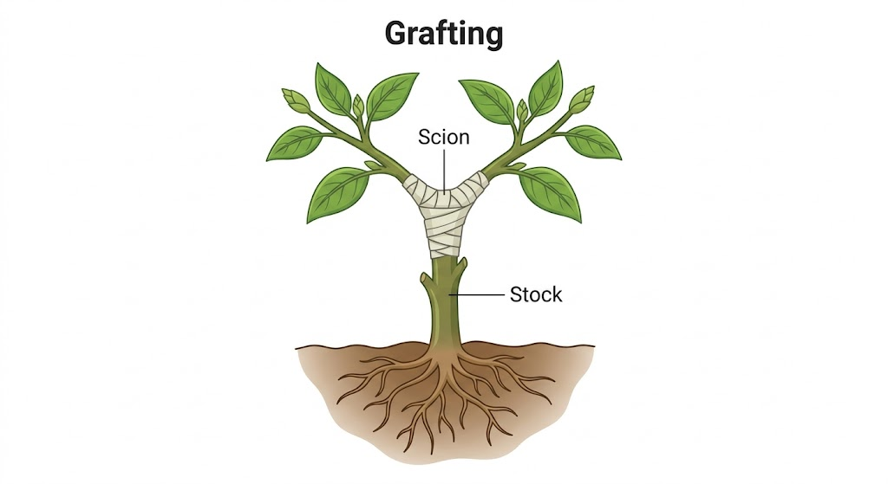

Vardaan Learning Institute
Class 8 Biology • Chapter Notes
🌐 vardaanlearning.com
📞 9508841336
Reproduction in Plants
Concept
Reproduction is the biological process by which all living organisms produce new individuals of their own kind for the survival and continuation of their species.
1. Modes of Reproduction
In plants, reproduction is broadly grouped into two main types:
- Asexual Reproduction: Only one parent is involved. There is no formation or fusion of male and female sex cells (gametes).
- Sexual Reproduction: Two parents are involved, resulting in the formation and fusion of male and female gametes.
2. Asexual Reproduction in Plants
Lower organisms and some higher plants reproduce asexually through various methods:
2.1 Binary Fission
This method means "splitting into two". The parent cell's nucleus or genetic material divides into two, and then the cell itself splits across the middle, forming two small, identical daughter cells. (Examples: Bacteria, Chlorella, Chlamydomonas).
2.2 Budding
The parent cell produces an outgrowth called a bud. The bud grows and then gets detached along with its daughter nucleus from the parent body to lead an independent life. (Example: Yeast).
2.3 Fragmentation
In organisms made of ribbon-like filaments, the filament grows and breaks off into two or more parts called fragments. Each fragment then regrows into an individual plant. (Example: Spirogyra).
2.4 Spore Formation
Common in fungi and plants like mosses and ferns, which bear spores on the underside of their leaves. The spores are light and can be carried by wind or insects. On reaching suitable conditions, they germinate into new plants.

3. Vegetative Reproduction (Propagation)
New plants can be produced by certain vegetative parts of a plant such as the leaf, stem, and root. These parts are called propagules.
3.1 Natural Vegetative Propagation
- By Stem:
- Ginger: A modified underground stem (rhizome) with nodes and internodes. Axillary buds grow out from the nodes to produce new plants.
- Potato: A modified stem (tuber) bearing vegetative buds called "eyes" which can sprout into new plants.
- Onion: A bulb containing a thick, short stem with overlapping scaly leaves. The axillary buds grow into new shoots.
- Common Grass: Long internodes creep on the surface. Roots and shoots grow from each node.
- By Leaf: Plants like Bryophyllum produce adventitious buds in the margins (notches) of their leaves. When these leaves fall on moist soil, the buds grow into tiny new plants.
- By Root: Plants like Sweet Potato, Dahlia, and Asparagus develop swollen, fleshy roots that store food. A single root can give rise to a new plant.
Fact
Ginger, potato, and onion are called modified stems because they perform additional functions of food storage and vegetative propagation!
3.2 Advantages and Disadvantages of Vegetative Reproduction
Advantages:
- Reproduction takes place in a shorter time.
- New plants spread over an area very quickly.
- It is a sure method of propagation.
- All good characteristics of the mother plant are exactly retained (creates clones).
Disadvantages:
- Since all plants are genetically identical, they are all likely to be affected by the same diseases simultaneously.
- Leads to overcrowding around the parent plant.
- New varieties cannot be produced.
3.3 Artificial Vegetative Propagation
Horticulturists use artificial methods to rapidly grow desirable plants:
- Cutting: A small piece of the plant (usually a stem) with an axillary bud is cut and planted in moist soil. (Examples: Rose, sugarcane).
- Layering: A lower branch is bent down to the ground and covered with soil. Roots develop from the buried portion, and it is then detached from the parent. (Examples: Jasmine, mint).
- Grafting: A shoot of a desired variety (Scion) is joined tightly to the rooted stem of another plant of the same species (Stock). The cambium layers must touch to merge successfully. (Examples: Mango, rose).
- Tissue Culture (Micropropagation): A tiny piece of plant tissue (explant) is grown in a sterile nutrient medium to form a mass of cells (callus). Hormones are added to differentiate them into tiny plantlets, which are then transferred to soil. Excellent for developing disease-free stock.

4. Sexual Reproduction in Plants
Flowers are the reproductive organs of the plant. They bear the male and female reproductive parts that produce gametes.
4.1 Parts of a Typical Flower (Whorls)
A typical flower is attached to the stem by a stalk called the pedicel. The swollen tip of the pedicel is the thalamus, upon which the four whorls are arranged:
- 1. Calyx (Sepals): The outermost green, leaf-like whorl. Protects the flower in the bud stage.
- 2. Corolla (Petals): The second whorl made of brightly colored, fragrant petals. They attract insects for pollination.
- 3. Androecium (Male Part): Made up of stamens. Each stamen has a thin stalk called a filament and a swollen tip called an anther. The anther produces pollen grains (male gametes).
- 4. Gynoecium / Pistil (Female Part): The innermost whorl made of carpels. Each carpel has three parts:
- Stigma: Sticky top part to catch pollen.
- Style: Middle tube connecting stigma to ovary.
- Ovary: Swollen base containing ovules (which hold the female egg cells).
Important
Flowers bearing both male and female parts are called Bisexual flowers. Flowers bearing only male (staminate) or female (pistillate) parts are called Unisexual flowers.
5. Pollination
Concept
Pollination is the process in which pollen grains from the anthers are transferred to the stigma of a flower of the same species.
5.1 Types of Pollination
- Self-pollination: Occurs within the same flower or between two flowers on the same plant.
- Cross-pollination: Occurs between two flowers on different plants of the same species. Requires agents.
5.2 Agents of Cross-Pollination
- Insects (e.g., Marigold, Dahlia, Salvia): Flowers are large, brightly colored, scented, contain nectar, and produce sticky pollen grains so they stick to the insect's body.
- Wind (e.g., Maize, Palm, Pine): Flowers are small, dull, not scented, and have no nectar. They produce a huge quantity of light, dry pollen grains. Anthers are long and protrude out to catch the wind.
- Water (e.g., Vallisneria): Aquatic plants where male flowers detach and float to the surface to come in contact with female flowers. Pollen grains are produced in large numbers.
Important
Exceptions: Lotus and Trapa (Singhara) are aquatic plants, but their flowers are exposed above the water surface and are pollinated by insects, not water!
6. Fertilization Process
After pollination, the fusion of the male cell with the female cell to produce a zygote occurs. The steps are:
- The pollen grain lands on the stigma and absorbs moisture.
- It begins to grow a pollen tube down through the style.
- The tube enters the ovary and reaches the ovule.
- The tube releases the male gametes, which fuse with the female egg cell inside the ovule to produce a zygote.
Post-Fertilization Changes:
- The fertilized ovule develops into a seed.
- The ovary develops into a fruit.
- Other parts like sepals and petals wither and fall off.

6.1 Artificial Pollination
This is the manual transfer of pollen grains to the stigma practiced by plant breeders. It is used for cross-breeding different varieties of a crop (e.g., a high-yielding variety with a disease-resistant variety) to develop new, superior varieties (hybrids) in crops like rice and wheat.